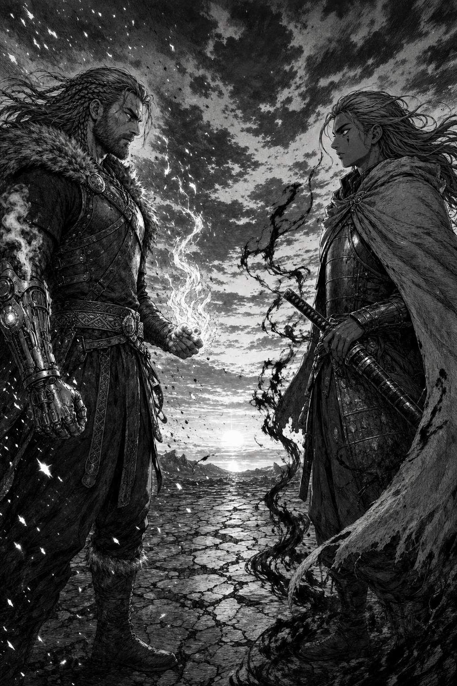
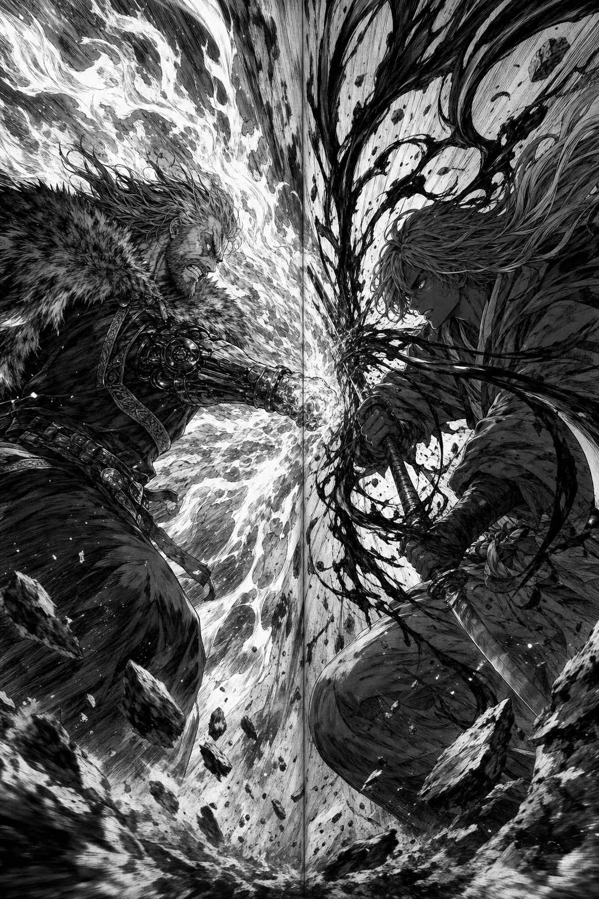
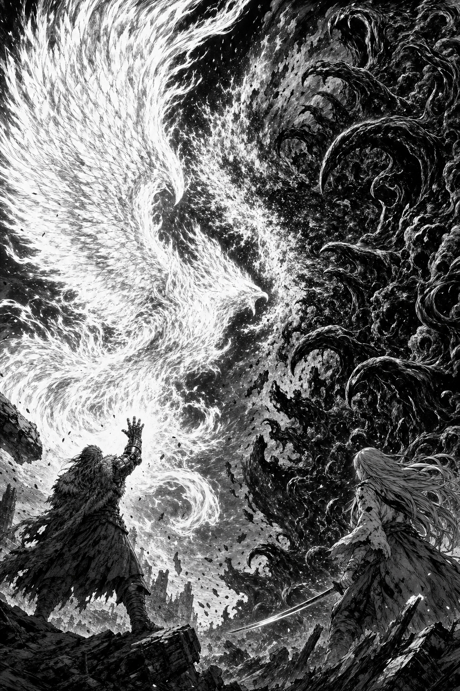

o fogo · encontra · o silêncio

Um campo de pedra rachada, no fim da tarde. Uriel seguia rastros de saqueadores. Nazura, informações sobre Kriston. Os caminhos se cruzaram — e nenhum dos dois costuma dar passagem.
shiiin…

Ninguém soube dizer quem se moveu primeiro. O Punho de Brasa encontrou a Ilamia envolta na Neo indomada — e o campo inteiro se dividiu entre luz e escuridão.
DOOON
ZUKU…

Uriel liberou tudo o que o braço guardava — a Fênix. E a Neo de Nazura respondeu sozinha, erguendo-se como uma maré de garras que ele ainda não sabe comandar. Por um instante, o céu teve dois donos.
FWOOOOSH
…shiin